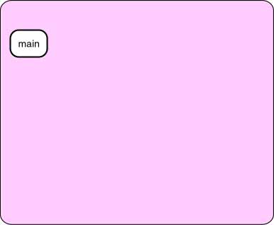

Dynamic Pyramids

Here, for reference, are the two (recursive) methods:
public int Triangle( int N )
{
if ( N == 1 )
return 1;
else
return N + Triangle( N-1 );
}
public int Pyramid( int N )
{
if ( N == 1 )
return 1;
else
return Pyramid ( N-1 )
+ Triangle ( N );
}
The diagram (at right) shows the activation chain when
the main() method has called Pyramid(3).
This results in three activations of the Pyramid() method.
Click on the diagram to see these activations.
When the base case Pyramid(1) is reached, it immediately
returns a value of 1.
Now the second activation, Pyramid(2), calls
Triangle(2) which results in activations of Triangle()
added to the chain.
After two activations, Triangle(2), returns a 3 to its caller.
Pyramid(2) now has all the values it needs and returns a
4 to its caller.
Pyramid(3) now calls Triangle(3) which eventually
returns a 6.
The value 10 is returned to main().
QUESTION 7:

It is equally valid to write Pyramid() with the
methods in the last line reversed:
public int Pyramid( int N )
{
if ( N == 1 )
return 1;
else
return Triangle ( N ) + Pyramid ( N-1 ) ; // Reversed Order
}
Will the sequence of activations in the activation chain be the same
for this method?